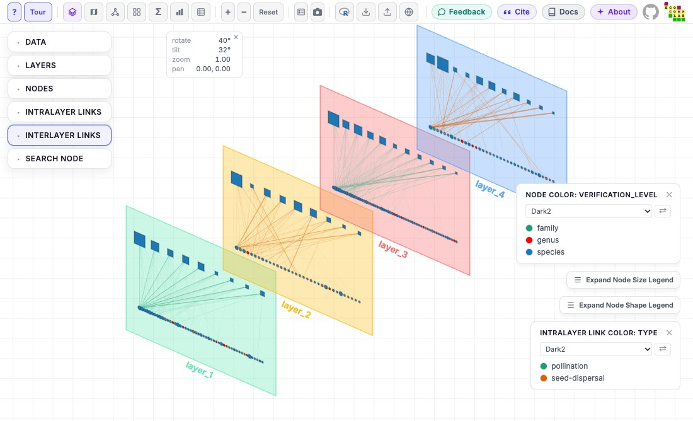

Overview
ggmira is an R interface to MiRA, the browser-based multilayer network visualizer. Its syntax follows ggplot2: start from a base plot with mira() and add components with + to control the nodes, links, layers and more. Using MiRA as the engine makes the plot both reproducible, because it is described in code, and interactive, because it opens in MiRA, where you can keep exploring and adjusting it. A plot can open in any of MiRA’s seven views (the stack of layers, a grid, a map, a layer view, the meta-network, a dashboard and the data tables), and use MiRA’s other features, such as highlighting a node.
ggmira works with the multilayer objects of the emln package, and includes its own copy of MiRA, so there is nothing else to install. Plots need an internet connection: MiRA loads its drawing libraries and map tiles from the web.
Installation
ggmira is not on CRAN yet. Install the development version from GitHub:
install.packages("emln")
# install.packages("remotes")
remotes::install_github("Ecological-Complexity-Lab/ggmira")Usage
library(emln)
library(ggmira)
net <- load_emln(17) # 4 layers; birds and plants
mira(net, bipartite = TRUE, setA_type = "bird") +
mira_layout("bipartite", seed = 42, nested = TRUE) +
mira_node(color_by = "verification_level",
color_values = c(genus = "red", species = "#1f77b4"),
size_by = "intra_degree_sum", size = 8,
shape = c(bird = "square", plant = "circle")) +
mira_intralayer(color_by = "type", min_weight = 0.01) +
mira_layer(color_by = "layer_name", labels = TRUE) +
mira_legends(show = c("node_color", "intralayer_color"))
plot_mira(net) opens a network with MiRA’s defaults; adjust it in MiRA, and MiRA’s R button gives the mira() code for the view. mira_save() saves a plot as a PNG, JPG or PDF file. Get started builds a plot step by step; the reference lists every component.
MiRA is best viewed on a large screen: it needs a window of at least 1024 x 600 pixels.
Getting help
Report problems and suggestions at https://github.com/Ecological-Complexity-Lab/ggmira/issues, with the code you ran and a screenshot of MiRA. Problems in MiRA itself go to https://github.com/Ecological-Complexity-Lab/MiRA/issues.